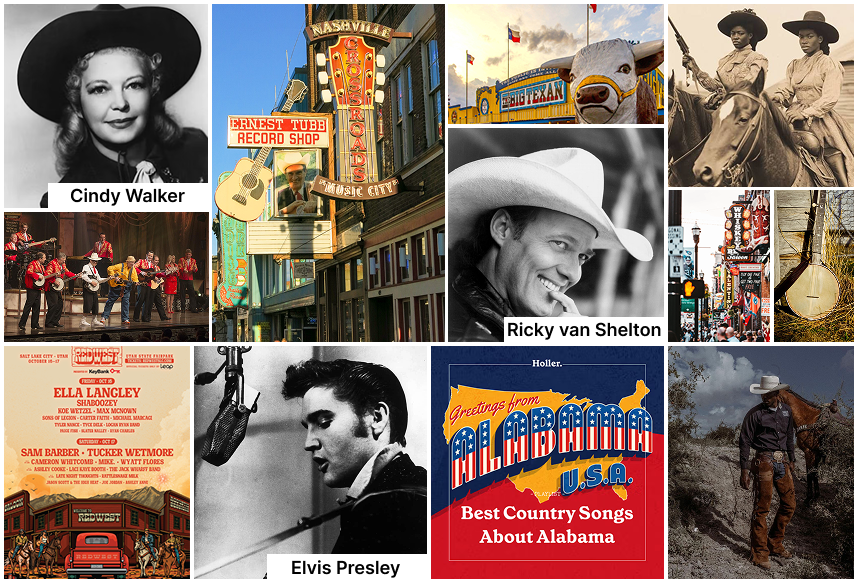
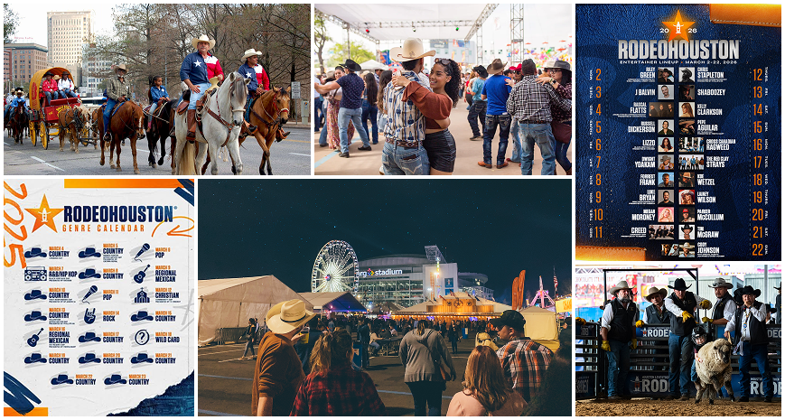
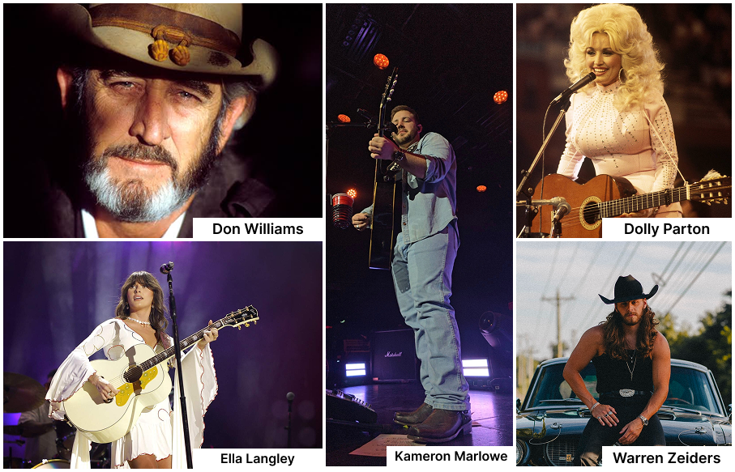
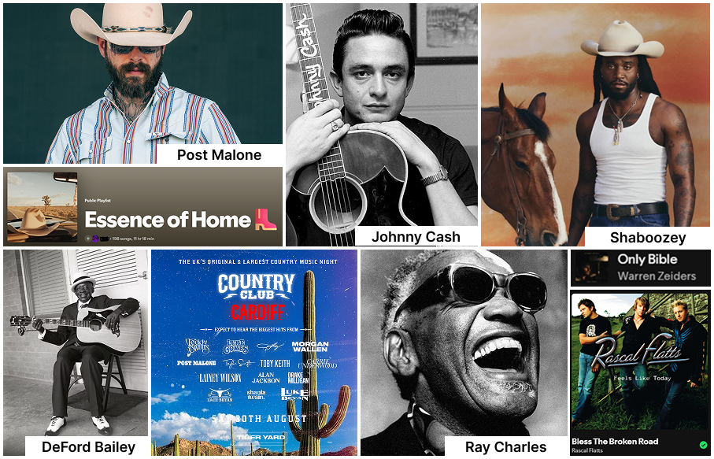
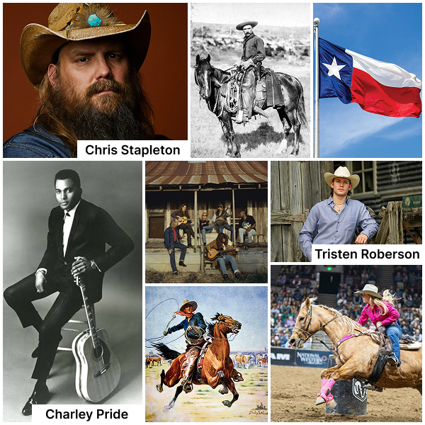
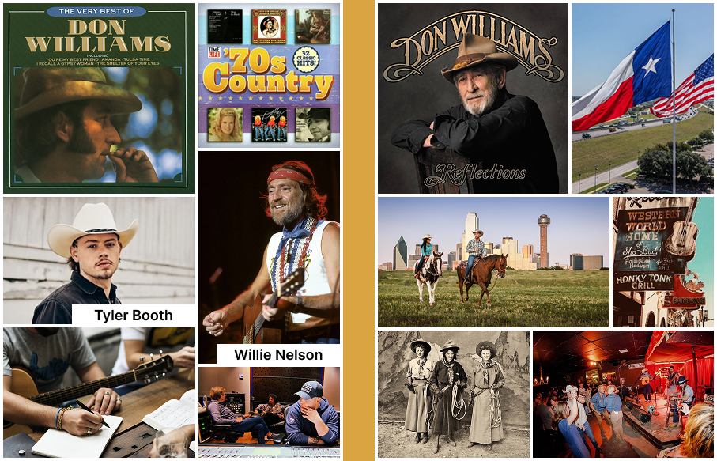
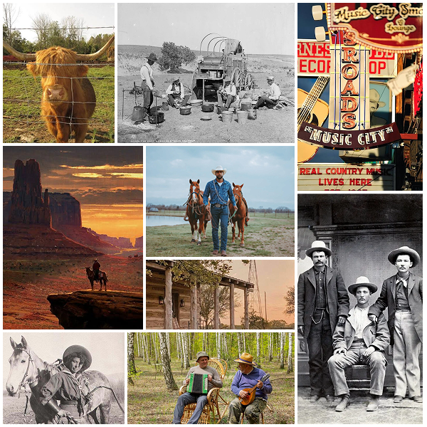

class: center, middle # Country Music ### Mjn digital garden Oluwaseyi Davies --- # Inhoud 1. Mijn startpunt 2. Waarom Country muziek? 3. Country muziek als digital garden 4. Hoe mijn garden kan groeien 5. Een voorbeeld van een vertakking 6. Afbeeldingen & bronnen voor inspiratie 7. Reflectie <p></p> --- # Mijn startpunt Countrymuziek is voor mij meer dan alleen een muziekgenre. Ik ben geboren en opgegroeid in **Houston, Texas**, waar countrymuziek onderdeel is van de cultuur. Je komt het bijvoorbeeld tegen bij: - Rodeos - Country Days - Lokale evenementen - Concerten en festivals <p></p> --- # Waarom country? Ik luister zelf graag naar countrymuziek. Vooral: - **Dolly Parton** - **Don Williams** - **Ella Langley** - **Kameron Marlowe** - **Warren Zeiders** vind ik interessant. Country is daarnaast door de jaren heen sterk veranderd. Van traditionele country tot moderne muziek met invloeden van **pop, rock en hiphop**. Dat maakt het voor mij een interessant onderwerp om steeds verder te ontdekken. <p></p> --- # Country muziek als digital garden Countrymuziek is een goed onderwerp voor een digital garden omdat het **veel verschillende kanten en verbindingen** heeft. Vanuit één nummer of artiest kun je steeds nieuwe onderwerpen ontdekken: - **Artiesten** → muziek, albums en songwriting - **Muziekstijlen** → traditional country, bluegrass, country rock en modern country - **Cultuur** → Texas, rodeo, cowboys en honky-tonk - **Geschiedenis** → de oorsprong en ontwikkeling van country - **Invloeden** → folk, blues, gospel, rock, pop en hiphop Eén onderwerp kan dus steeds nieuwe takken creëren. Dit maakt countrymuziek geschikt voor een digital garden die **blijft groeien en veranderen**. <p></p> --- # Hoe kan mijn garden groeien? Mijn garden begint met één simpel onderwerp: Country Music Daaruit kunnen verschillende takken ontstaan: <div class="taken-grid"> <div> <p>Artiesten</p> <ul> <li>Chris Stapleton</li> <li>Charley Pride</li> <li>Tristan Roberson</li> <li>Etc.</li> </ul> </div> <div> <p>Cultuur</p> <ul> <li>Texas</li> <li>Rodeo</li> <li>Cowboys</li> <li>Honky-tonk</li> </ul> </div> <div> <p>Muziek</p> <ul> <li>Traditional Country</li> <li>Bluegrass</li> <li>Country Rock</li> <li>Modern Country</li> </ul> </div> <div> <p>Geschiedenis</p> <ul> <li>Oorsprong</li> <li>Ontwikkeling</li> <li>Invloeden</li> </ul> </div> </div> Elke tak kan vervolgens weer nieuwe onderwerpen opleveren. <p></p> --- # Een voorbeeld van een vertakking Ik kan bijvoorbeeld beginnen met: <div class="taken-grid"> <div> <p>Don Williams</p> <ul> <li>Traditional Country ↓</li> <li>Country uit de jaren '70 ↓</li> <li>Andere artiesten ↓</li> <li>Songwriting</li> </ul> </div> </div> Maar ik kan ook een andere richting kiezen: <div class="taken-grid"> <div> <p>Don Williams</p> <ul> <li>Texas ↓</li> <li>Countrycultuur ↓</li> <li>Rodeo & Honky-Tonk</li> </ul> </div> </div> ####Eén onderwerp kan dus meerdere richtingen op. <p></p> --- # Mijn garden is niet lineair Een belangrijk onderdeel van mijn digital garden is dat ik niet één vaste route hoef te volgen. Ik kan ergens beginnen en vervolgens een onverwachte richting opgaan. <div class="taken-grid"> <div> <ul> <li>Een nummer ↓</li> <li>Een artiest ↓</li> <li>muziekstijl ↓</li> <li>Een historische gebeurtenis ↓</li> <li>Een nieuwe artiest ↓</li> <li>Een heel nieuw onderwerp</li> </ul> </div> </div> Hierdoor ontstaan er steeds nieuwe verbindingen tussen mijn interesses. --- # Bronnen voor inspiratie Voor mijn onderzoek gebruik ik onder andere: - [Country Music Hall of Fame](https://www.countrymusichalloffame.org/learn/country-music-history) - [Encyclopaedia Britannica](https://plumrosepublishing.com/the-history-of-country-music/) - [Library of Congress](https://www.britannica.com/art/bluegrass-music) - [PBS - Ken Burns](https://www.pbs.org/kenburns/country-music/roots-branches-of-country-music) - [Griizzly Rose](https://grizzlyrose.com/history-of-country-music/) - [Music Rising](https://musicrising.tulane.edu/discover/themes/country-music/) - [Medium](https://midweekcrisis.medium.com/a-brief-history-of-country-music-ca72e8fff803) - [Musicnotes](https://www.musicnotes.com/blog/an-american-tradition-the-history-of-country-music-influences/?srsltid=AfmBOopG-MGnrjlAKgoXNbYHh73PstFLviQs8-YRZ_68QN1us4Aj6wYG) - [Library of Congress](https://www.loc.gov/collections/dolly-parton-and-the-roots-of-country-music/articles-and-essays/country-music-timeline/) - [Oklahoma Historical Society](https://www.okhistory.org/publications/enc/entry?entry=CO072) --- # Reflectie Het interessante aan dit proces is dat ik vooraf niet precies weet waar mijn digital garden zal eindigen. Ik begin met iets waar ik zelf al interesse in heb: **countrymuziek**. Door onderzoek te doen ontstaan nieuwe vragen, ideeën en verbanden. Mijn garden groeit dus mee met mijn nieuwsgierigheid. <p></p> <!-- Laat onderstaande staan anders breekt je presentatie -->